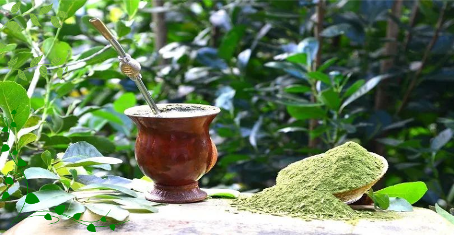

História
Ir a fundo na história da erva-mate e seu início durante a história.
Cultura
Relatar a relação da planta com os contextos sociais e culturais de alguns lugares.
Economia
Falar como a erva-mate permitiu a criação e desenvolvimento de algumas cidades.